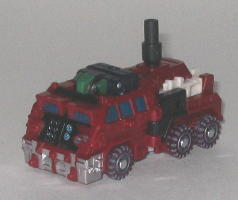
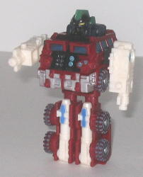
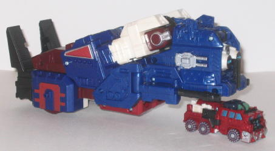
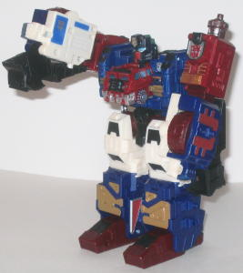

Sentinel
Maximus w/ Apelinq (OTFCC 2004 Exclusive)
Sentinel
Maximus w/ Apelinq (OTFCC 2004 Exclusive)
(NOTE: Because this is a repaint, this is
not a full-blown review. This mainly covers any changes made to the mold
and the color scheme, and merely compares it to Overload w/ Rollout. For
a review on the mold itself, read the review of Overload w/ Rollout
here
.)
 Apelinq
Apelinq


Allegiance
: Minicon
Size
: Mini-Con
Difficulty of Transformation
: Very
Easy
Color Scheme
: Dirty white, metallic
brick red, black, and some silver, very dark brown, pale yellow, light
powder blue, metallic silvery blue, glossy sky blue, and dull jungle green
Rating
: 3.7
Apelinq is revived--
this time as a Minicon! Well, officially-- considering that Minicons, in
actuality, are about as big as Maximals, I'd wager he's still a Maximal
myself. I can't fathom why he'd change alliances... But anyways, the one
mold change made to Apelinq, when compared to the mold's predecesssor,
Rollout, is the head. It's now pretty much a carbon-copy of Apelinq's previous
form, minus any of the organic parts like ape fur or what not. It looks
pretty nice, and has a lot of detail for such a small head. Unfortunately--
and this is my biggest beef with this version of Apelinq-- the head does
NOT match the body. At all. Apelinq is a serious, no-nonsense guy, and
judging from his facial expression, this hasn't changed. But his body is
stubby, tubby, and rather dumpy, and though this look can work for some
Transformers, it doesn't for Apelinq. And in vehicle mode, you can tell
that the head piece is a bit bulkier than it was on Rollout's-- the back
tends to stick up above the roof of the vehicle a bit. But if you ignore
that, the colors on this mold are quite nice, and fit together very well--
red, white, and black is a good scheme for a good guy leader. And he's
got a TON of paint apps for such a small toy-- heck, just check the color
scheme list! One of my favorites is the the powdery blue paint wash used
on the tires-- it actually makes the toy look really rugged, like Apelinq
has been through his fair share of battles. Oh, and one positive mold change
I've noticed from Rollout-- the lower legs don't snap off so easily anymore,
so that's a big plus.
Apelinq's new Minicon
version was a nice idea, and has a great color scheme, but the mold itself
still looks pretty dorky, and the head does NOT match the body as much
as Rollout's did.
Sentinel
Maximus


Allegiance
: Autobot
Size
: Max-Con (Armada size class)
Difficulty of Transformation
: Medium
Color Scheme
: Dirty white, metallic
brick red, metallic dark blue, metallic dark red, black, and some silver,
glossy sky blue, light powder blue, red, gold, and metallic silvery blue
Powerlinx ports
: 6 (0 gimmicked)
Rating
: 8.7
Sentinel Maximus is certainly
a spiffy repaint, and just like Apelinq, he has one mold change; the head.
Sentinel Max's head is very stylized, and a great update of the
Primal
Prime
head (which is who the Sentinel Maximus character is supposed
to be an upgraded version of). It's very prime-ish, but not so much that
you can't recognize that it's not Optimus Prime itself-- it's a bit more
bulky, and there aren't any antennae. A small complaint, however, is that
the green used for Apelinq's head crests show through a bit on the backside
of Sentinel Maximus' head, and the green really doesn't fit with the other
colors. Still, a nice remold. The color scheme itself is awesome, and the
colors are almost spot-on the same as Primal Prime's. Red, white, and blue,
again, is pretty primish, and excellent for a good guy leader. To mix it
up, though, there's other colors in play here, like black and gold, and
they work VERY well with the other colors. Sentinel Maximus has also got
plenty of paint apps, just like his little buddy Apelinq, so nooo problems
there, folks. I especially like the silver "worn" paint wash on the upper
shoulder bits-- he's definitely a battle-hardened 'bot, that's for sure.
Sentinel Maximus also has two more Autobot symbols-- one on the left side
of his chest, the other on the inside of his right arm-- but considering
that he already has two Autobot symbols on his shoulders, I think they
were pretty unnecessary. Also, the electronics have been gutted, and although
I do miss the automatic transformation sound, I can understand why it was
removed-- to make an already-expensive exclusive toy a bit cheaper. So
I guess it was a good decision in the end. Oh, and one more small complaint--
it just seems like the ratcheting joints on the shoulders don't aren't
quite matched up to each other when they're in their vehicle mode position,
thus making the vehicle a little harder to snap together. It's not too
big of a problem, but it is worth noting.
Sentinel Maximus is
a wonderful repaint, and a great homage to Primal Prime-- the remolded
head is especially a great design. And he can still combine with Armada
Prime and all that good stuff, if you so desire. But as great as he is,
he doesn't QUITE match up to the awesomeness that is
Energon
Ultra Magnus
. But considering how rare Magnus is, it might actually
be cheaper to go for Sentinel Max in this case. But if you don't really
want to spend a lot of money on this mold, the only real choice left is
Overload, who I think has a rather bright color scheme, so... your choices
are pretty limited unless money isn't an option, anyways.
Sentinel Maximus Bio
:
FUNCTION: Armored Transport
MOTTO: ""...'Til all are one."
One of the Heralds created by Primus
when it first withdrew it's consciousness to the core of Cybertron, Sentinel
Maximus has emerged from the shadows of Time to serve as a guardian over
Cybertron during it's darkest hour. With direct access via interdimensional
datalink to the nearly limitless knowledge of Vector Sigma, he is a master
battlefield tactician and an ideal leader. His perfect synergy with his
Mini-Con Ape-Linq is driven by a totally unified consciousness; the two
bots act as one in all things. The vast processing power at his disposal
allows him to download holographic items into reality, and the power upgrade
granted him by Primus prior to his ancient battle with a diabolical and
long-forgotten entity from the southern polar regions of Cybertron make
him a nearly unstoppable force on the battlefield.
Strength: 10.0
Intelligence: 10.0
Speed: 7.0
Endurance: 10.0
Rank: 9.0
Courage: 10.0
Fireblast: 9.0
Skill: 10.0
Review by Beastbot
Back to BotCon
Exclusives Index